吸收能量；由于I是负的，所以dU/dt也将是负的。
吸收能量；由于I是负的，所以dU/dt也将是负的。我们已经看到，要在一个电感中建立起电流I，能量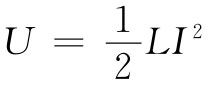 必须由外电路供应；当电流下降到零时，这能量又交还给外电路。在一个理想电感中并没有能量损耗机制。当有一交变电流通过一电感时，能量在它与电路的其他部分之间来回流动，递交给电路的能量的平均 速率为零。这样，我们便说电感是一个无耗 元件，在其中没有电能被消耗掉——也就是“损失”掉。
同样，一个电容器的能量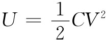 ，当电容器放电时，会归还给外电路。当一电容器置于交流电路中时，能量在其中流进流出，但每一周期中的净能流为零。一个理想电容器也是一个无耗元件。
我们知道，电动势是一个能源。当电流I沿电动势的方向流动时，能量以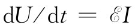
的速率释放给外电路。如果电流是被电路中的其他发电机驱使——逆着
电动势的方向流动，则这电动势将以速率
吸收能量；由于I是负的，所以dU/dt也将是负的。
如果一部发电机与一个电阻R相接，则通过该电阻的电流为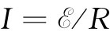
。由发电机以速率
供应的能量为该电阻所吸收。这一能量在电阻中变成热，从而使该电路的电能损失掉。这样，我们便说电能在电阻中耗散
了。在电阻中能量被耗散的速率为dU/dt=RI2
。
在交流电路中，能量消耗于电阻中的平均速率等于RI2 在一周中的平均值。由于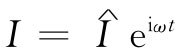 ——这我们实际指的是I正比于cosωt——所以在一周中I2 的平均值就是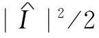 ，因为电流峰值为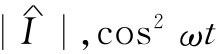 的平均值为1/2。
当一部发电机接至任意一个阻抗z时，能量的损失又将如何呢（当然，所谓“损失”，我们指的是电能转变为热能）？任何阻抗z都可以写成它的实部及虚部之和。这就是说，
z=R+iX， （22.24）
式中R和X都是实数。从等效电路的观点出发，我们可以讲，任何阻抗相当于一个电阻与一个纯虚数阻抗——称为电抗 ——相串联，如图22-17所示。
图22-17 任何阻抗都与纯电阻及纯电抗的串联组合等效
我们以前就知道，任何仅由一些L和C组成的电路都具有纯虚数的阻抗。由于平均来讲没有任何能量会在某一个L和C中损失，因而仅含有一些L和C的纯电抗将不会有能量损失。我们可以看到，在一般情况下对于电抗来说这必定是正确的。
如果一部具有电动势 的发电机被连接至图22-17的那个阻抗z上，则来自该发电机的电动势和电流便应有这样一个关系：
的发电机被连接至图22-17的那个阻抗z上，则来自该发电机的电动势和电流便应有这样一个关系：
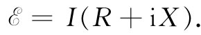 （22.25）
要找出能量输出的平均速率，就要求出乘积
的平均值。此刻我们必须小心！当处理这种乘积时，应与实数值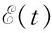
和I（t）打交道（只有当我们具有线性
方程时，复变数函数的实部才会代表实际的物理量；现在我们所关心的是一个乘积
，它肯定就不是线性的）。
假定我们选取t的原点以便使振幅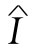 是一实数，比如I0 ，那么I的实际时间变化就由下式给出：
I=I0 cosωt.
式（22.25）的电动势是下式
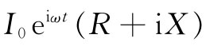
的实部，也即
式（22.26）中的两项分别代表跨越图22-17中R和X的电压降。我们看到，那跨越电阻的电压降与电流同相 ，而那跨越纯电抗部分的电压降则与电流异相 。
由发电机供应的能量消耗的平均速率
〈P〉平均
，等于乘积
在一周内的积分除以周期T，换句话说，
第一个积分为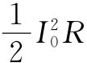 ，而第二个积分为零。所以在一个阻抗z=R+iX中的平均能量损失只取决于z的实部，并且等于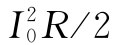 。这同我们以往关于在电阻中的能量损失结果相符，而在电抗部分并没有能量损失。